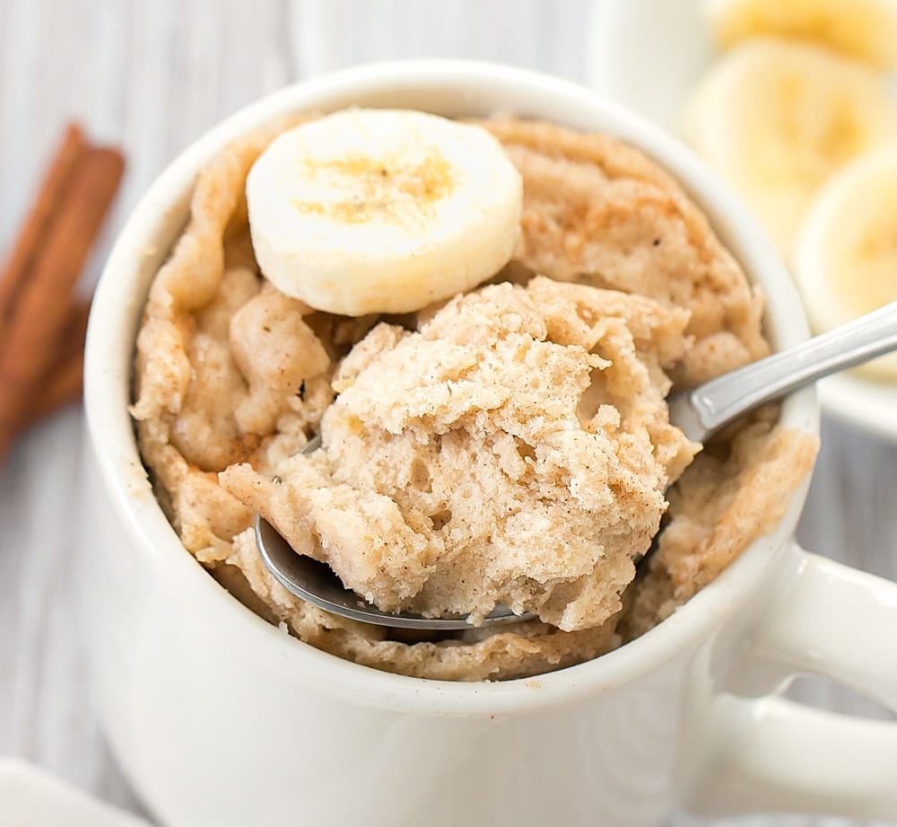

Banana Bread Mug Cake
Ever wanted a sweet treat out of the blue and remembered just how much of a hassle it is to bake things traditionally? It gets boring when you have to whip out a tray or a pan, we can all agree on that... So go ahead and switch things up with this single-serving recipe that can satisfy your cravings in just five minutes, all from the comfort of a coffee mug. This recipe is a favorite of many and suitable for all times and all occasions - from late night cravings to an easy morning snack, this your ideal step-by-step instruction for an easy, enjoyable little cake.
Ingredients
(Required/Base Ingredients)
- 1 banana
- 1 egg
- 1 tsp brown sugar
- 1 tsp oats
- 1 cup pancake mix
Add-Is
(Optional/Not Required)
- ¼ tsp salt
- 1 tsp vanilla extract
- (any amount) chopped nuts
- (any amount) chocolate chips
Instructions
Follow these steps bake your very own mug cake - anything done beyond steps 1-4 are solely up to your preference of topping, etc.
- Start by breaking off pieces of the (peeled) banana and placing them into the mug. Then, start mashing it with either a fork or a spoon.
- Crack the egg and place it in whole.Go ahead and add your brown sugar, oats, and pancake mix into the mug - it doesn't matter what order you place the ingredients into your mug, so don't worry about what goes in when.
- Mix all ingredients into your mug, it should have a batter-like consistency once you finish mixing everything properly.
- Place your mug into the microwave and set the timer for 2 ½ minutes. When you take it out of the microwave, stab it with a fork to make sure it's cooked all the way through (the fork should have no batter stuck to the prongs when you pull it out of the cake. If it does, put the mug back into the microwave and heat it for 30 seconds.)